Wildkin Frontier · September 14, 2026 · Actual model evidence
A better plan, tested on one tree.
The new modeling-director workflow improved the first tree's proportions and arrangement, as Chris observed. Trial A finished at 7.4/10 HOLD. Trial B failed its geometry gate at 1.0/10 after three attempts. Neither tree is admitted. The experiment exposed concrete planning, construction and verification gaps now captured in the reusable workflow.
Both builders started fresh from the same generated target. Trial B received more specific section tables after owner feedback. This is an evolving workflow case study, not a controlled comparison proving one community skill or model is better.
Target and retained results
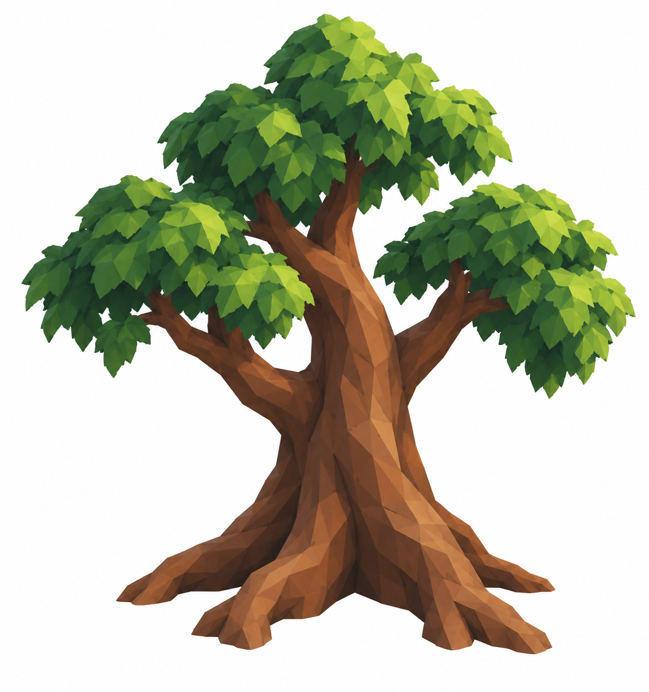
Generated target · direction, not a finished modelTrial A · actual result · HOLD 7.4/10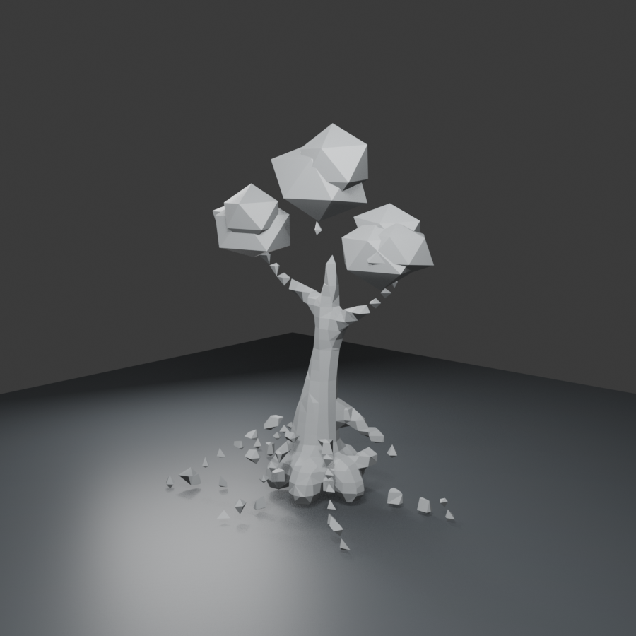
Trial B · actual result · Gate A HOLD 1.0/10How the first attempts changed
Chris judged the new first attempt substantially better than the earlier balls-and-rods result, particularly the placement of its parts. Materials and framing differ; the images support a qualitative comparison.
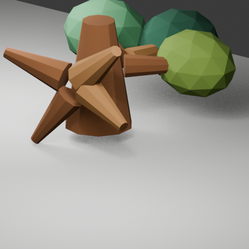
Earlier first attempt · actual model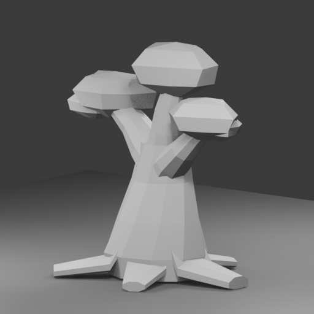
Trial A first attempt · actual untextured massing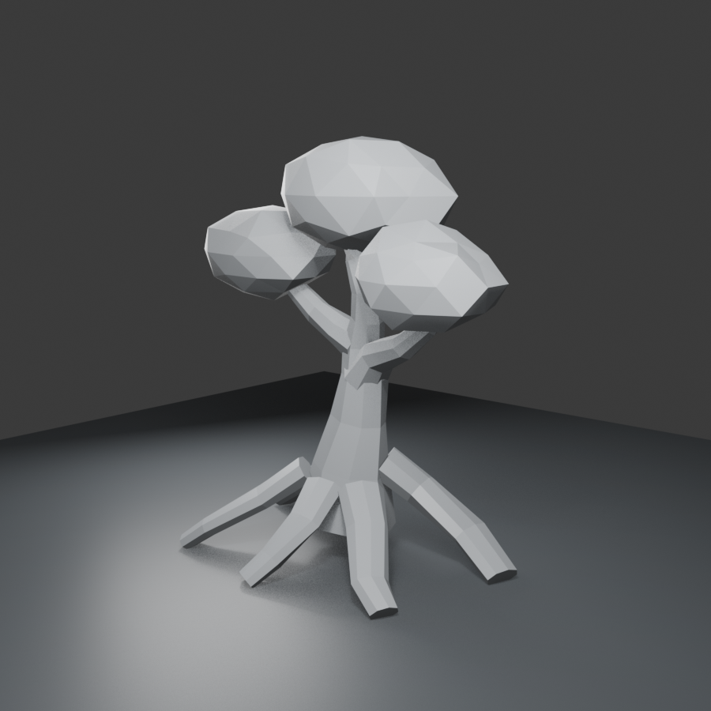
Trial B first attempt · actual untextured massingInspect the actual geometry
Trial A · source three quarterTrial B · source three quarter
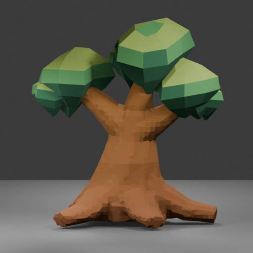
Trial A · front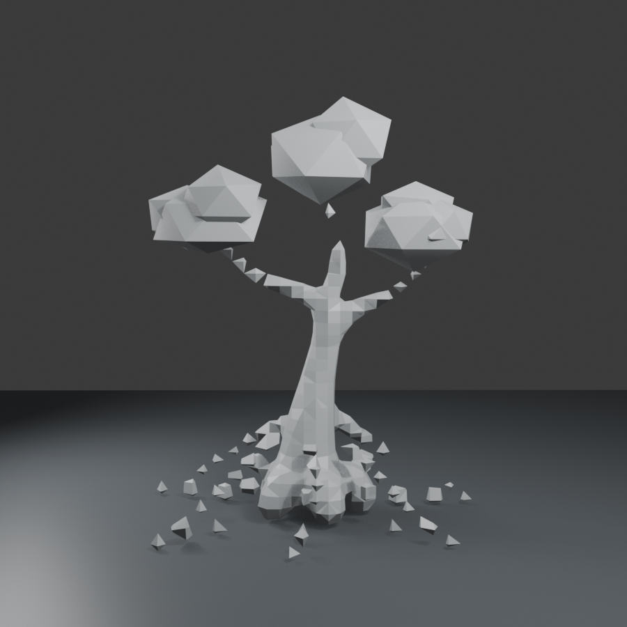
Trial B · front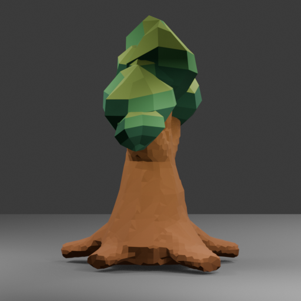
Trial A · left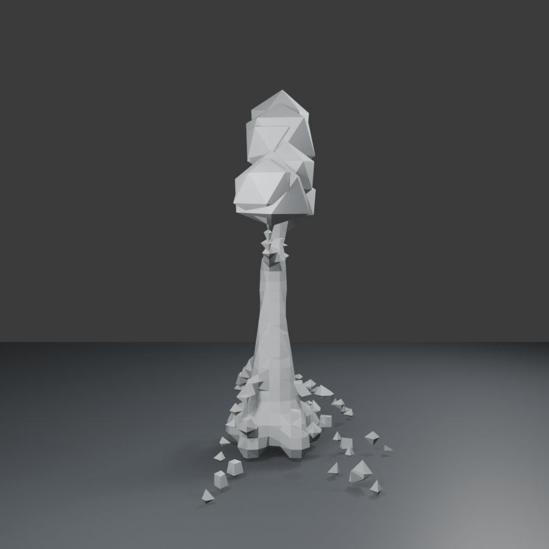
Trial B · left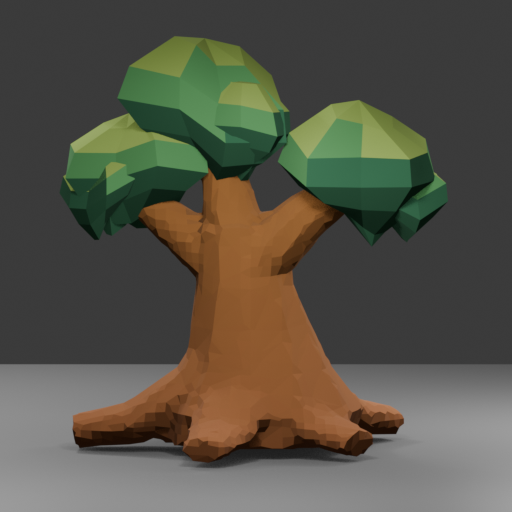
Trial A · rear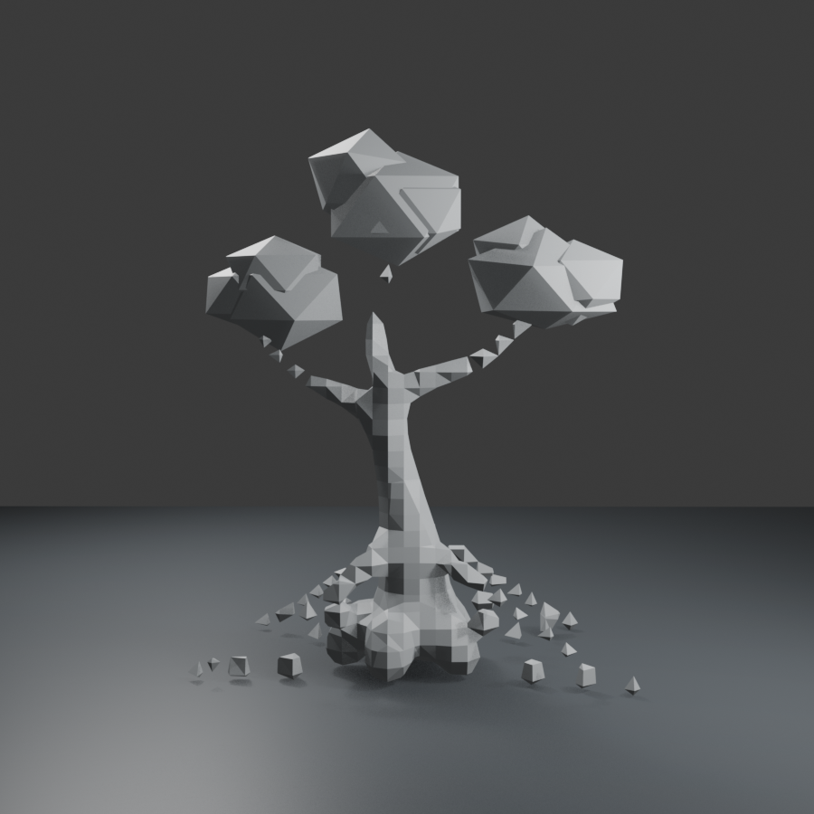
Trial B · rear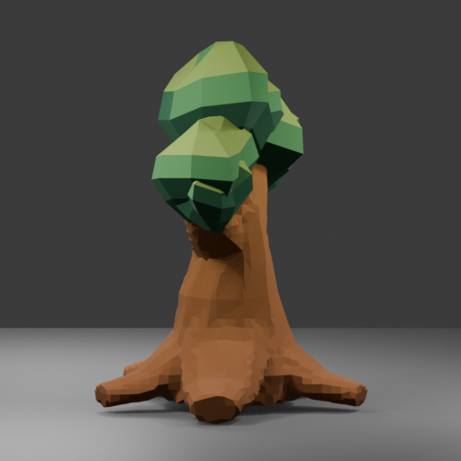
Trial A · right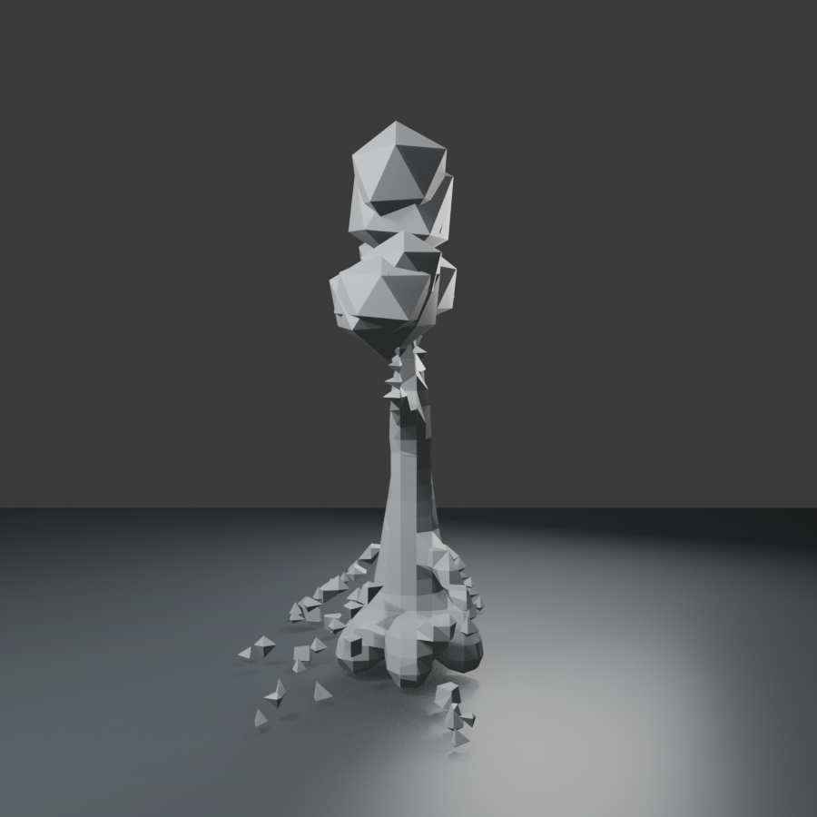
Trial B · rightAt small render sizes
Trial B did not pass massing, so it has no final material, small-render or export evidence.
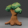
Trial A · 48 px render, enlarged for inspection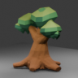
Trial A · 96 px render, enlarged for inspectionIn the actual game camera
Trial A's exact GLB was inserted temporarily into an isolated copied-save scene. It has no collision, streaming, registry or persistence integration. HUD occlusion and terrain contact here are evidence to consider before any future placement, not proof of admission. Trial B was not exported or inserted.
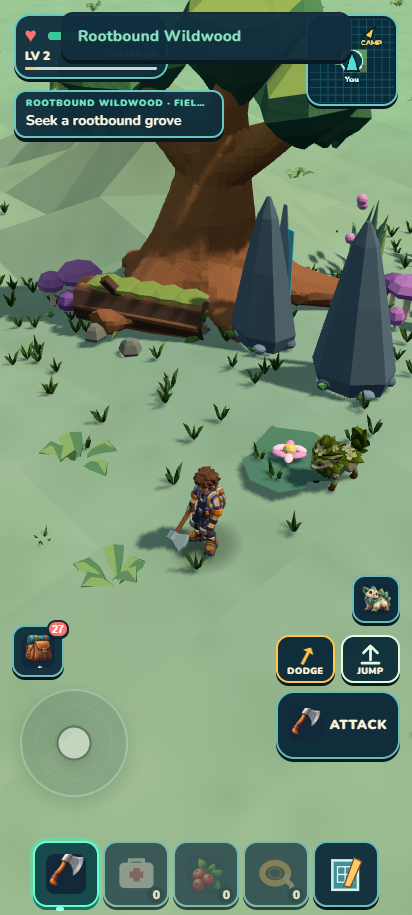
Trial A · actual temporary game previewWhat the planner now hands to the builder
The original plan named offsets, taper and shallow elbows, but did not specify all intermediate sections or enforce the resulting gesture. The revised director provides proposed centerline points, full section dimensions, lengths and bend angles computed from those points. It pairs them with visible target-contour checks. Hidden geometry remains an explicit inference.
Original construction plan · Curvature checks · Section tables · Machine-readable geometry plan · Reusable modeling-director skill
Findings and limits
- A separate target analyst and early image review helped establish proportions and part placement. Chris explicitly judged the fresh first attempt substantially better than the earlier balls-and-rods result.
- Specific path points, section sizes and derived bend angles made intended curves explicit. They did not by themselves specify valid forks or grounded buttress surfaces.
- Plan revisions were not consistently approved before execution, and the builder substituted operations. The revised skill now requires relevant Blender guidance, independent technical plan review and re-review of material method changes.
- Trial B's failed Boolean method exposed discontinuous section frames; its final attempt still left 46 disconnected wood components. The original object-count assumption was invalid and is explicitly superseded by computed connectivity evidence.
- The construction method must match the form: a buttress requires grounded webs, not just a bent elliptical tube. A tiny geometry probe should establish unfamiliar junction construction before a full asset relies on it.
- Trial A retained exact meshes/Blender sources but lacked separately preserved literal historical MCP code. Trial B retained executed scripts and plan hashes. The skill now requires frozen inputs and retained construction code.
- The two builders received evolving guidance, different cameras/material stages, and different implementation choices. These results do not establish a general ranking of the community packs or Astra's capabilities.
- The generated target is artistic direction. Actual all-angle renders, computed topology and exact exported/game views are separate evidence. Trial B never reached export or runtime preview.
Recommendation: Keep the modeling-director stage, but pair it with applicable Blender recipes, an independent technical plan gate, one small method probe for unfamiliar surfaces, and target-specific visual checks. Reuse the useful Arjun organizational/reference guidance and RobLe measurement ideas selectively. Continue the authorized habitat rotation and parallel Wildkin work; do not reopen this failed tree method immediately.
Pinned community sources and hashes · Trial A method record · Trial B method record · Workflow investigation · Full morning handoff
This tree study is closed. Chris subsequently activated continuous habitat/Wildkin rotations, which continue in the current queue. No push, paid generation or global skill installation occurred.